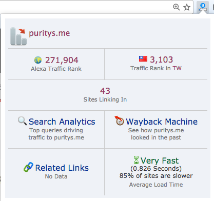
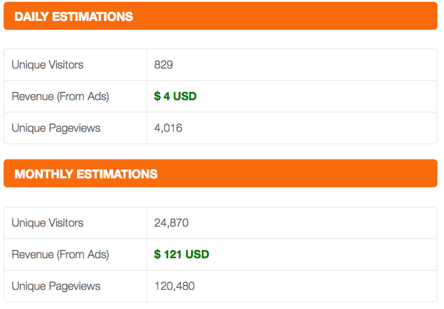

你是否知道你的网站平常有多少位使用者呢，每天的流量又是多少，你的网站又值多少钱呢? 这里提供一些网站的流量统计与价值计算的工具，可以帮助你进一步了解你的网站。
Alexa 是最早开始统计所有网站流量的一家公司，它是透过浏览器的一个外挂，称为 Alexa traffic tank ，安装这个外挂，可以帮助我们快速的查询自已网站的流量排名，看下图示，Alexa Traffic Rank 会显示网站的世界排名与国家排名，像我网站目前的在全球的排名是 20 多万名次，台湾则是 3 千多名。
除了安装外挂之外，Alexa 也有提供网页来查询， 你可以进入 http://www.alexa.com/siteinfo/puritys.me 这个页面 ，就能查到全球以及台湾的网站排名，另外这个页面也有 Top 关键字、网页离开率、每天浏览人次，但就我的关察，除了排名以外，其它的数据都只能当参考值，因为它提供的数据跟我在 Google Analytics 上统计的资料有落差，我自已的网站也有做一些简单的流量统计，Alexa 上的资料更新很慢，大约要一个月才有变化吧，而且排名有时候也会大起大落，虽然如此，他提供的资料还有一定的参考价值，例如我可以知道出这个月的排名有没有比上个月好。
台湾网站流量排名
http://www.alexa.com/topsites/countries/TW ，透过 Alexa 提供的这个网页，可以查到台湾网站流量的排行榜。
similarweb
similarweb 也是一个网站流量统计的工具，他提供的功能比 Alexa 更多，但是大部分都是付费功能，例如现在 Facebook 等 Social 平台很火红，similarweb 就提供了你的网站跟这些平台的 Soical 资讯，可惜的是免费版就只能看到两笔资料，而且没有细节。
similarweb 还提供了以下网站资讯
- 网站链结：包含连出去的网站与连进来的网站
- 统量来源：透过搜寻引擎进到我们网站的百分比
- 广告数量
- 相似网站排名
网站价值
siteworthtraffic 这个网站蛮有趣的，它会计算出你的网站值多少钱 XD ，以及你的网站每个月的广告收入与每年的广告收入，例如我的网站就值 3 千美金，每个月可以有 121 美金的广告收入 (实际上没有)，在看到这个网站之前，还从来没有想过我的网路值多少钱，你也可以用它来查询别人的网站值多少钱喔。
